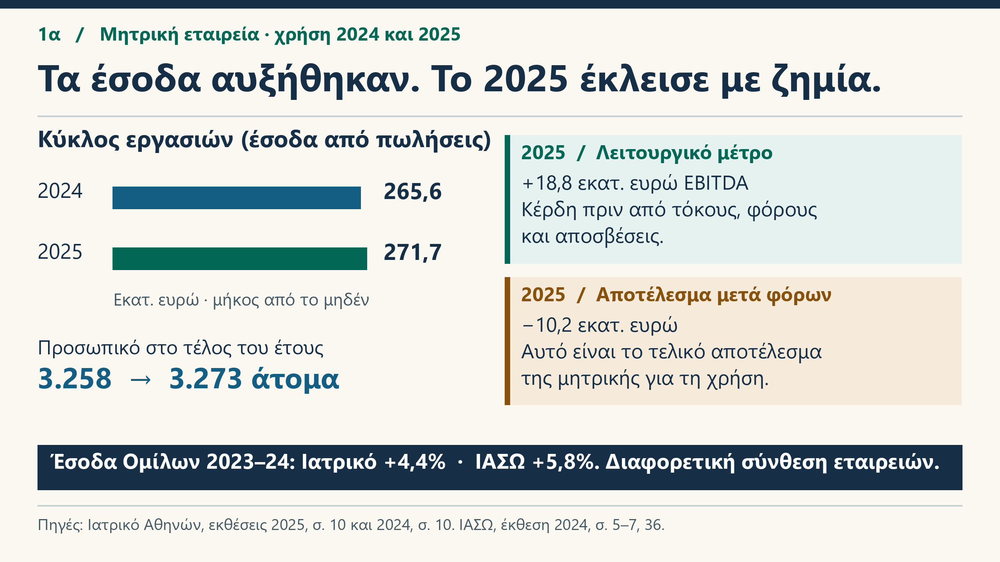
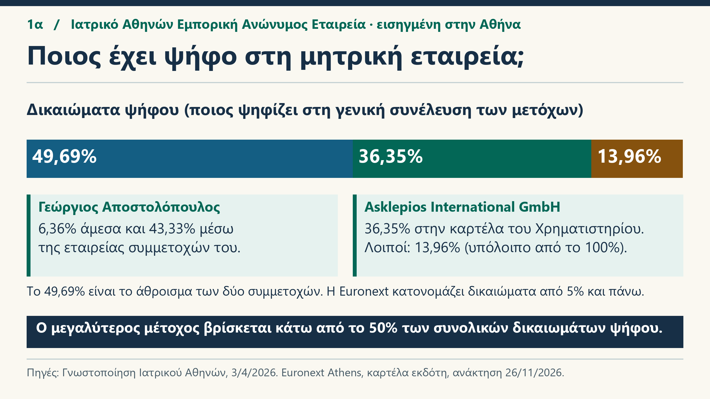
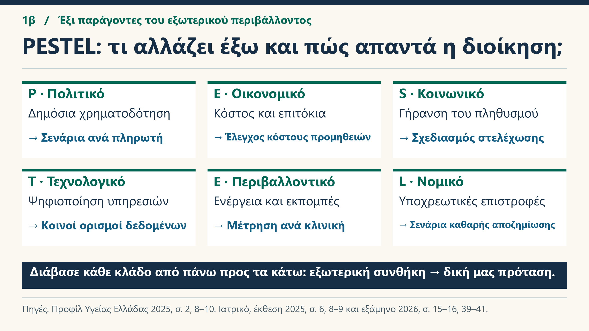
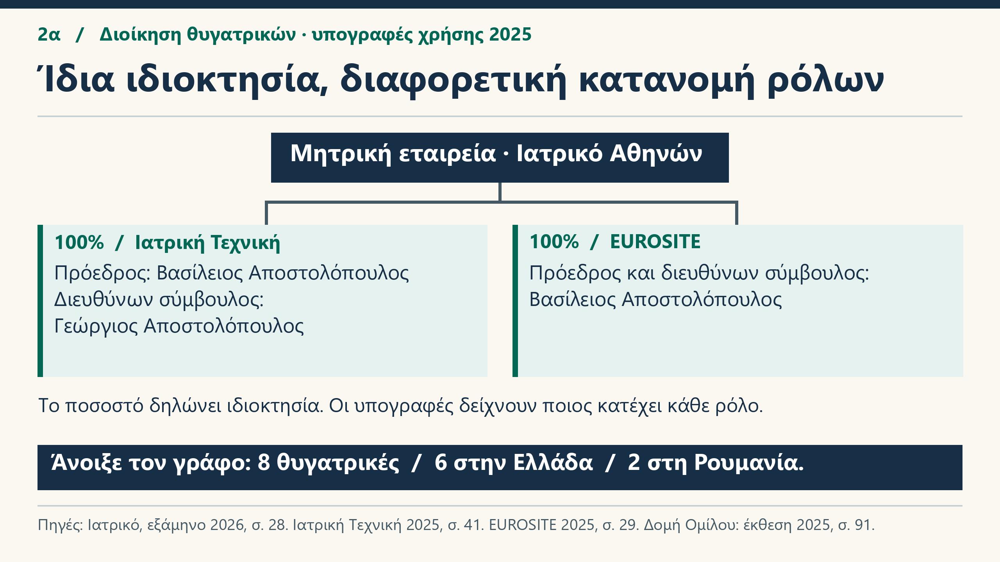
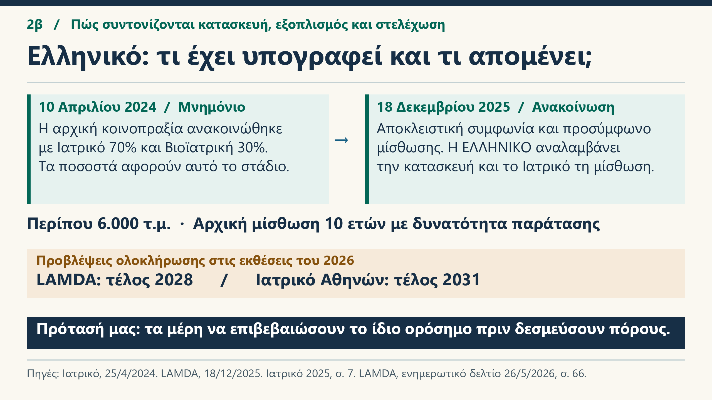
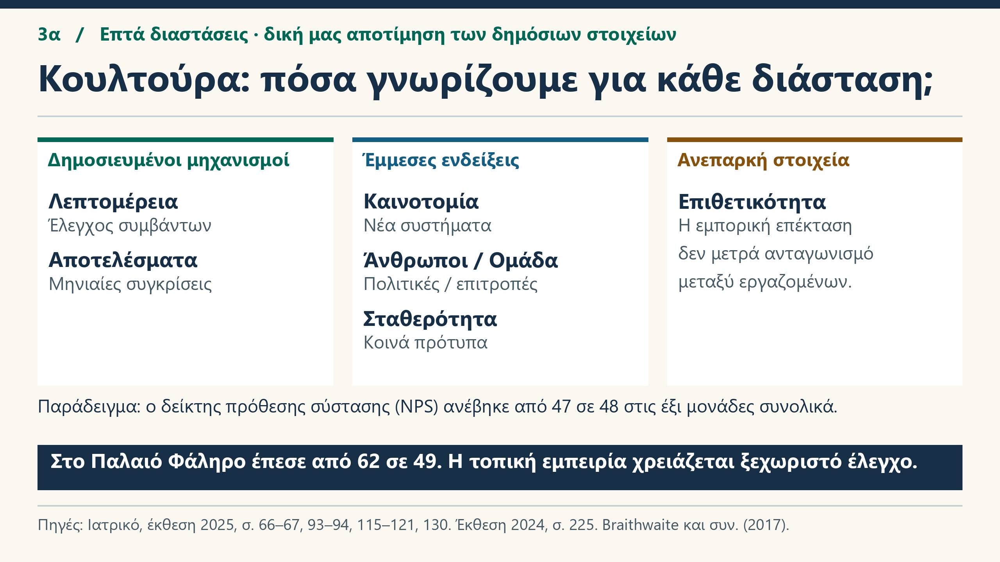
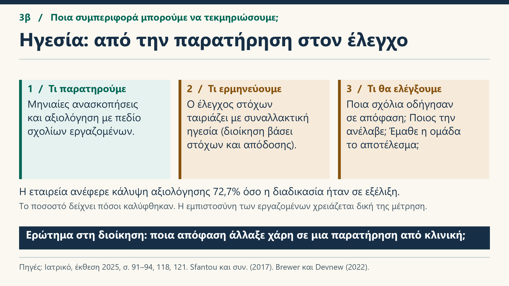

Η εργασία σε επτά σχήματα
Τα έσοδα αυξήθηκαν. Το 2025 έκλεισε με ζημία.
Η μητρική αύξησε τα έσοδα κατά 2,3%. Η τελική ζημία ήταν 10,2 εκατ. ευρώ.

Διάβασε τα στοιχεία ως κείμενο
- Κύκλος εργασιών (έσοδα από πωλήσεις)
- 2024
- 265,6
- 2025
- 271,7
- Εκατ. ευρώ · μήκος από το μηδέν
- Προσωπικό στο τέλος του έτους
- 3.258 → 3.273 άτομα
- 2025 / Λειτουργικό μέτρο
- +18,8 εκατ. ευρώ EBITDA
- Κέρδη πριν από τόκους, φόρους
- και αποσβέσεις.
- 2025 / Αποτέλεσμα μετά φόρων
- −10,2 εκατ. ευρώ
- Αυτό είναι το τελικό αποτέλεσμα
- της μητρικής για τη χρήση.
- Έσοδα Ομίλων 2023–24: Ιατρικό +4,4% · ΙΑΣΩ +5,8%. Διαφορετική σύνθεση εταιρειών.
Μητρική 2025, σ. 10 · Ιατρικό 2024, σ. 10 · ΙΑΣΩ 2024, σ. 5–7
Επιλογή σχήματος ↑Ποιος έχει ψήφο στη μητρική εταιρεία;
Ο Γεώργιος Αποστολόπουλος συγκεντρώνει 49,69% άμεσα και έμμεσα. Η Euronext Athens εμφανίζει την Asklepios με 36,35%.

Διάβασε τα στοιχεία ως κείμενο
- Δικαιώματα ψήφου (ποιος ψηφίζει στη γενική συνέλευση των μετόχων)
- 49,69%
- 36,35%
- 13,96%
- Γεώργιος Αποστολόπουλος
- 6,36% άμεσα και 43,33% μέσω
- της εταιρείας συμμετοχών του.
- Asklepios International GmbH
- 36,35% στην καρτέλα του Χρηματιστηρίου.
- Λοιποί: 13,96% (υπόλοιπο από το 100%).
- Το 49,69% είναι το άθροισμα των δύο συμμετοχών. Η Euronext κατονομάζει δικαιώματα από 5% και πάνω.
- Ο μεγαλύτερος μέτοχος βρίσκεται κάτω από το 50% των συνολικών δικαιωμάτων ψήφου.
PESTEL: τι αλλάζει έξω και πώς απαντά η διοίκηση;
Κάθε κλάδος δείχνει τον εξωτερικό παράγοντα και από κάτω την αντίστοιχη πρόταση της ομάδας.

Διάβασε τα στοιχεία ως κείμενο
- P · Πολιτικό
- Δημόσια χρηματοδότηση
- → Σενάρια ανά πληρωτή
- E · Οικονομικό
- Κόστος και επιτόκια
- → Έλεγχος κόστους προμηθειών
- S · Κοινωνικό
- Γήρανση του πληθυσμού
- → Σχεδιασμός στελέχωσης
- T · Τεχνολογικό
- Ψηφιοποίηση υπηρεσιών
- → Κοινοί ορισμοί δεδομένων
- E · Περιβαλλοντικό
- Ενέργεια και εκπομπές
- → Μέτρηση ανά κλινική
- L · Νομικό
- Υποχρεωτικές επιστροφές
- → Σενάρια καθαρής αποζημίωσης
- Διάβασε κάθε κλάδο από πάνω προς τα κάτω: εξωτερική συνθήκη → δική μας πρόταση.
Προφίλ Υγείας Ελλάδας 2025 · Έκθεση 2025, σ. 8 · Εξάμηνο 2026, σ. 15
Επιλογή σχήματος ↑Ίδια ιδιοκτησία, διαφορετική κατανομή ρόλων
Στην Ιατρική Τεχνική δύο διαφορετικά πρόσωπα υπογράφουν ως πρόεδρος και διευθύνων σύμβουλος. Στη EUROSITE υπογράφει το ίδιο πρόσωπο.

Διάβασε τα στοιχεία ως κείμενο
- Μητρική εταιρεία · Ιατρικό Αθηνών
- 100% / Ιατρική Τεχνική
- Πρόεδρος: Βασίλειος Αποστολόπουλος
- Διευθύνων σύμβουλος:
- Γεώργιος Αποστολόπουλος
- 100% / EUROSITE
- Πρόεδρος και διευθύνων σύμβουλος:
- Βασίλειος Αποστολόπουλος
- Το ποσοστό δηλώνει ιδιοκτησία. Οι υπογραφές δείχνουν ποιος κατέχει κάθε ρόλο.
- Άνοιξε τον γράφο: 8 θυγατρικές / 6 στην Ελλάδα / 2 στη Ρουμανία.
Γράφος όλων των θυγατρικών · Ιατρική Τεχνική, σ. 41 · EUROSITE, σ. 29
Επιλογή σχήματος ↑Ελληνικό: τι έχει υπογραφεί και τι απομένει;
Το μνημόνιο του 2024 ακολούθησαν αποκλειστική στρατηγική συμφωνία και προσύμφωνο εμπορικής μίσθωσης. Τα έτη 2028 και 2031 είναι δημοσιευμένες προβλέψεις.

Διάβασε τα στοιχεία ως κείμενο
- 10 Απριλίου 2024 / Μνημόνιο
- Η αρχική κοινοπραξία ανακοινώθηκε
- με Ιατρικό 70% και Βιοϊατρική 30%.
- Τα ποσοστά αφορούν αυτό το στάδιο.
- 18 Δεκεμβρίου 2025 / Ανακοίνωση
- Αποκλειστική συμφωνία και προσύμφωνο
- μίσθωσης. Η ΕΛΛΗΝΙΚΟ αναλαμβάνει
- την κατασκευή και το Ιατρικό τη μίσθωση.
- Περίπου 6.000 τ.μ. · Αρχική μίσθωση 10 ετών με δυνατότητα παράτασης
- Προβλέψεις ολοκλήρωσης στις εκθέσεις του 2026
- LAMDA: τέλος 2028 / Ιατρικό Αθηνών: τέλος 2031
- Πρότασή μας: τα μέρη να επιβεβαιώσουν το ίδιο ορόσημο πριν δεσμεύσουν πόρους.
Μνημόνιο 2024 · Συμφωνία 18/12/2025 · Έκθεση Ιατρικού, σ. 7 · Ενημερωτικό LAMDA, σ. 66
Επιλογή σχήματος ↑Κουλτούρα: πόσα γνωρίζουμε για κάθε διάσταση;
Ο Όμιλος δημοσιεύει διαδικασίες και δείκτες. Η πραγματική συμπεριφορά των ομάδων χρειάζεται έρευνα μέσα στις κλινικές.

Διάβασε τα στοιχεία ως κείμενο
- Δημοσιευμένοι μηχανισμοί
- Λεπτομέρεια
- Έλεγχος συμβάντων
- Αποτελέσματα
- Μηνιαίες συγκρίσεις
- Έμμεσες ενδείξεις
- Καινοτομία
- Νέα συστήματα
- Άνθρωποι / Ομάδα
- Πολιτικές / επιτροπές
- Σταθερότητα
- Κοινά πρότυπα
- Ανεπαρκή στοιχεία
- Επιθετικότητα
- Η εμπορική επέκταση
- δεν μετρά ανταγωνισμό
- μεταξύ εργαζομένων.
- Παράδειγμα: ο δείκτης πρόθεσης σύστασης (NPS) ανέβηκε από 47 σε 48 στις έξι μονάδες συνολικά.
- Στο Παλαιό Φάληρο έπεσε από 62 σε 49. Η τοπική εμπειρία χρειάζεται ξεχωριστό έλεγχο.
Έκθεση 2024, σ. 225 · Έκθεση 2025, σ. 119 · Έκθεση 2025, σ. 130
Επιλογή σχήματος ↑Ηγεσία: από την παρατήρηση στον έλεγχο
Η παρακολούθηση στόχων συνάδει με συναλλακτική ηγεσία. Για να εξετάσουμε συμμετοχή και εμπιστοσύνη χρειάζονται μαρτυρίες και παρατήρηση.

Διάβασε τα στοιχεία ως κείμενο
- 1 / Τι παρατηρούμε
- Μηνιαίες ανασκοπήσεις
- και αξιολόγηση με πεδίο
- σχολίων εργαζομένων.
- 2 / Τι ερμηνεύουμε
- Ο έλεγχος στόχων
- ταιριάζει με συναλλακτική
- ηγεσία (διοίκηση βάσει
- στόχων και απόδοσης).
- 3 / Τι θα ελέγξουμε
- Ποια σχόλια οδήγησαν
- σε απόφαση; Ποιος την
- ανέλαβε; Έμαθε η ομάδα
- το αποτέλεσμα;
- Η εταιρεία ανέφερε κάλυψη αξιολόγησης 72,7% όσο η διαδικασία ήταν σε εξέλιξη.
- Το ποσοστό δείχνει πόσοι καλύφθηκαν. Η εμπιστοσύνη των εργαζομένων χρειάζεται δική της μέτρηση.
- Ερώτημα στη διοίκηση: ποια απόφαση άλλαξε χάρη σε μια παρατήρηση από κλινική;
Όροι και δείκτες με απλά λόγια
- Άμεση / έμμεση συμμετοχή
- Άμεση σημαίνει ότι το ίδιο το πρόσωπο έχει τις μετοχές. Έμμεση σημαίνει ότι τις έχει μέσω εταιρείας που ελέγχει. Τα δύο ποσοστά προστίθενται μία φορά.
- Δικαιώματα ψήφου
- Το ποσοστό των ψήφων στη γενική συνέλευση των μετόχων. Με 49,69% κάποιος βρίσκεται κάτω από το μισό των συνολικών δικαιωμάτων.
- Κύκλος εργασιών
- Τα έσοδα από τις πωλήσεις αγαθών και υπηρεσιών σε μια περίοδο, πριν αφαιρεθούν τα έξοδα.
- EBITDA
- Κέρδη πριν από τόκους, φόρους και αποσβέσεις. Δείχνει μια πλευρά της λειτουργικής επίδοσης. Το καθαρό αποτέλεσμα περιλαμβάνει και αυτές τις επιβαρύνσεις.
- EBIT
- Κέρδη πριν από τόκους και φόρους, αφού αφαιρεθούν οι αποσβέσεις.
- Περιθώριο κέρδους
- Το κέρδος ως ποσοστό των εσόδων. Περιθώριο 10% σημαίνει 10 ευρώ κέρδος ανά 100 ευρώ πωλήσεων.
- Μερίδιο αγοράς
- Πωλήσεις της επιχείρησης διαιρεμένες με τις πωλήσεις ολόκληρης της ίδιας αγοράς, για την ίδια περίοδο.
- NPS (Net Promoter Score)
- Δείκτης πρόθεσης σύστασης. Από το ποσοστό όσων βαθμολογούν 9–10 αφαιρούμε το ποσοστό όσων δίνουν 0–6. Οι βαθμοί 7–8 συμμετέχουν στο σύνολο των απαντήσεων. Η κλίμακα είναι από −100 έως +100 μονάδες.
- SAP (Systems, Applications and Products in Data Processing)
- Λογισμικό που συνδέει λειτουργίες μιας επιχείρησης, όπως αγορές, αποθήκη και λογιστήριο, ώστε να δουλεύουν με κοινά στοιχεία.
- PESTEL
- Πλαίσιο εξέτασης πολιτικών, οικονομικών, κοινωνικών, τεχνολογικών, περιβαλλοντικών και νομικών παραγόντων έξω από την εταιρεία.
- Κινητικότητα προσωπικού
- Στην εταιρική έκθεση, αποχωρήσεις στη διάρκεια του έτους ως ποσοστό του προσωπικού στο τέλος του έτους.
- Κάλυψη αξιολόγησης
- Το ποσοστό του προσωπικού που καλύφθηκε από τη διαδικασία αξιολόγησης κατά τη μέτρηση.
- Rebate / clawback
- Έκπτωση και υποχρεωτική επιστροφή αντίστοιχα. Η πρώτη μειώνει την αμοιβή του παρόχου. Η δεύτερη συνδέεται με υπέρβαση του διαθέσιμου προϋπολογισμού.
- LLM (Large Language Model)
- Μεγάλο γλωσσικό μοντέλο. Εργαλείο τεχνητής νοημοσύνης που επεξεργάζεται και συντάσσει κείμενο.
- Εύρος διοίκησης
- Πόσα άτομα αναφέρονται απευθείας στον ίδιο προϊστάμενο.